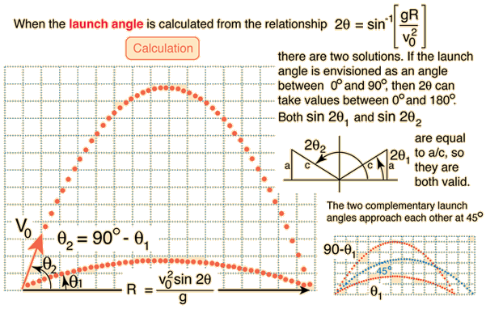

Angle of LaunchVariation of the launch angle of a projectile will change the range. If the launch velocity is known, the required angle of launch for a desired range can be calculated from the motion equations. |
Index Trajectory concepts | ||
|
Go Back |
|  | Index Trajectory concepts | ||
|
Go Back |